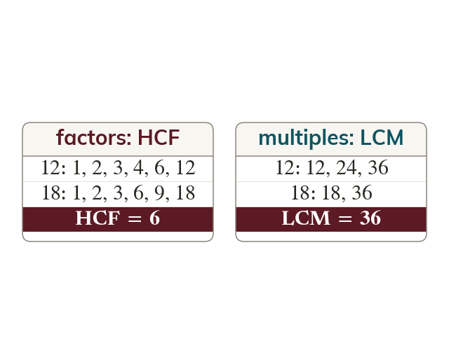

HCF and LCM defined
The HCF is the largest number dividing into both exactly. The LCM is the smallest number both divide into exactly.
The Highest Common Factor (HCF) of two numbers is the largest number that divides into both exactly. The Lowest Common Multiple (LCM) is the smallest number that both divide into exactly. Listing the factors (for HCF) or multiples (for LCM) of each number and comparing works for small numbers, but becomes impractical as the numbers grow - there could be a long way to list before a common multiple appears, or many factors to check.